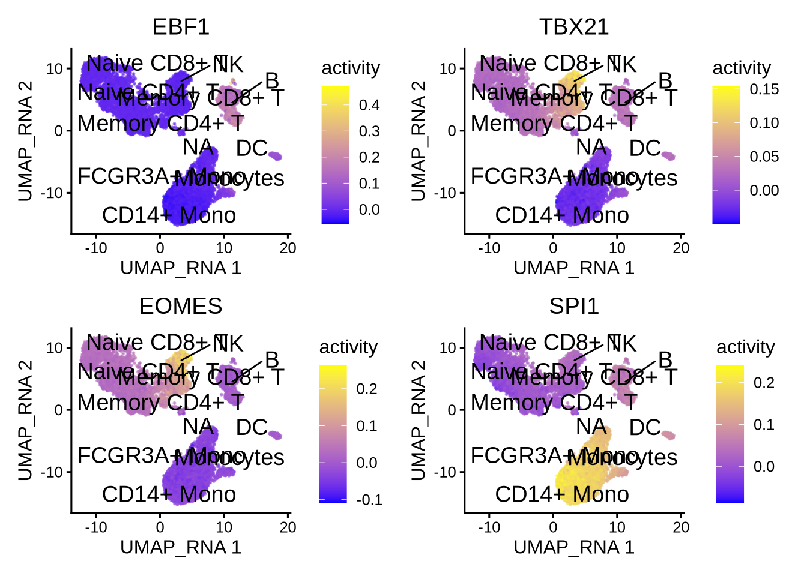
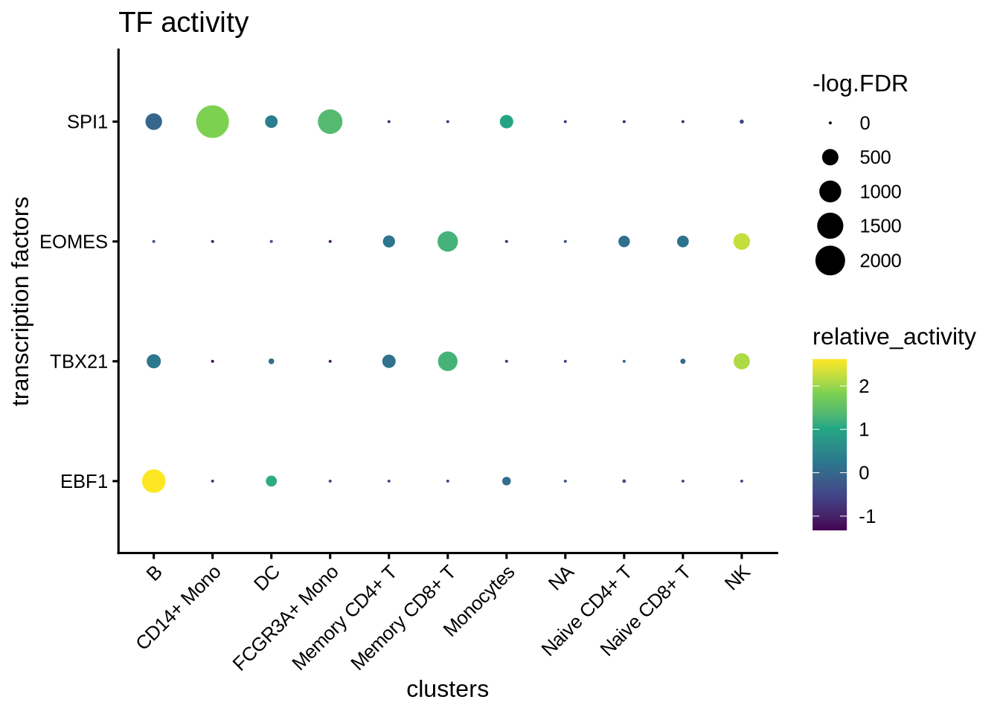
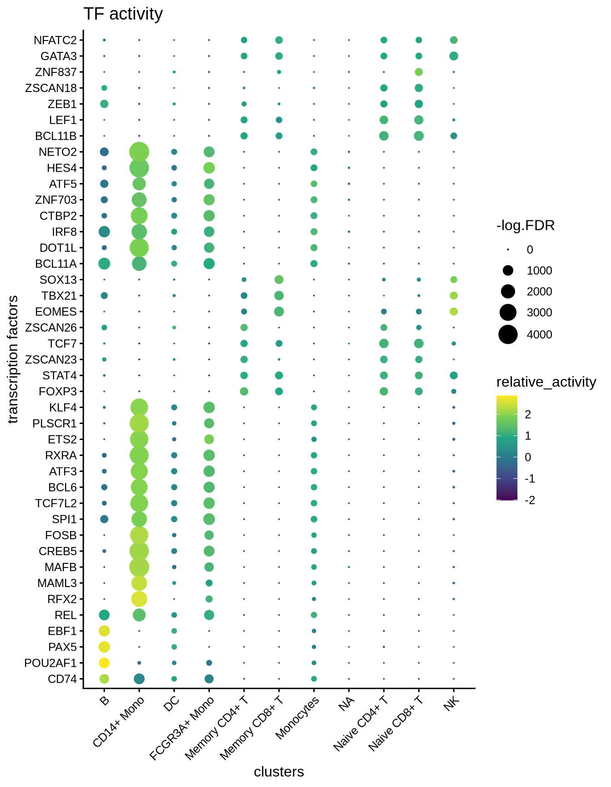
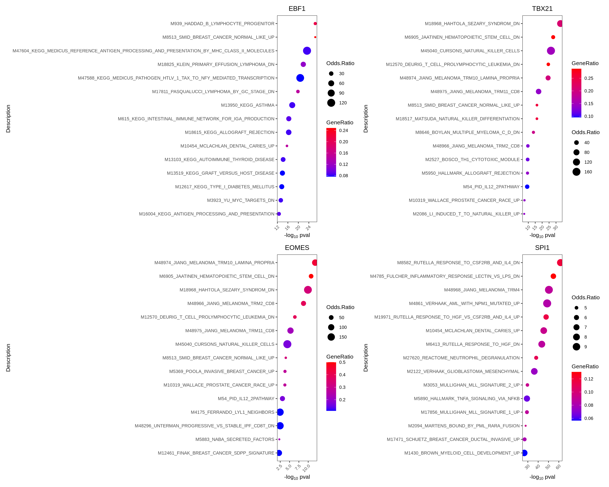
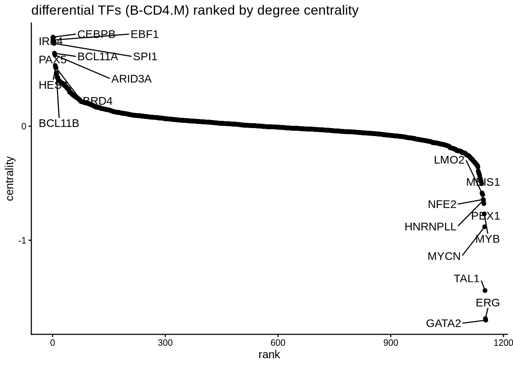

7 Network analysis
The epiregulon.extra package provides tools for downstream analysis of gene regulatory networks (GRNs) and TF activity. It enables users to identify differential TF activity, visualize these differences, construct differential graphs that highlight changes in GRN topology, and discover potential interaction partners by identifying overlapping regulons.
7.1 Perform differential TF activity
We can determine which TFs exhibit differential activities across cell clusters/groups via the findDifferentialActivity function. This function is a wrapper around the findMarkers function from scran package.
library(epiregulon.extra)
markers <- findDifferentialActivity(activity_matrix = score.combine,
clusters = GeneExpressionMatrix$cell_type,
pval.type = "some",
direction = "up",
logvalues = FALSE)
markersgetSigGenes compiles the group-wise tests into a single dataframe and enables users to select the top differential TFs based on their desired cutoffs.
7.2 Visualize TF activities
Epiregulon also provides the option for visualizing the inferred TF activities.
options(ggrastr.default.dpi=300)
tfs_interest <- c( "EBF1","TBX21","EOMES","SPI1")
plotActivityDim(sce = GeneExpressionMatrix,
activity_matrix = score.combine[tfs_interest,],
tf = tfs_interest,
dimtype = "UMAP_RNA",
nrow=2,
ncol=2,
point_size=0.1,
label = "cell_type",
rasterise = TRUE)
We can compare the activity with gene expression of the same TFs.
plotActivityDim(sce = GeneExpressionMatrix,
activity_matrix = assay(GeneExpressionMatrix, "normalizedCounts")[tfs_interest,],
tf = tfs_interest,
dimtype = "UMAP_RNA",
nrow=2,
ncol=2,
legend.label = "Gex",
colors = c("grey","blue"),
point_size=0.1,
rasterise = TRUE)
We can also generate violin plots to visualize TF activity.
plotActivityViolin(activity_matrix = score.combine,
tf = tfs_interest,
clusters = GeneExpressionMatrix$cell_type,
legend.label = "Gex",
nrow=2,
ncol=2,
boxplot = TRUE)
We generate violin plots to visualize TF gene expression.
plotActivityViolin(activity_matrix = assay(GeneExpressionMatrix, "normalizedCounts")[tfs_interest,],
tf = tfs_interest,
clusters = GeneExpressionMatrix$cell_type,
nrow=2,
ncol=2,
legend.label = "gene expression",
boxplot=TRUE)
We can visualize the different TFs in a bubble plot:
plotBubble(activity_matrix = score.combine,
tf = tfs_interest,
clusters = GeneExpressionMatrix$cell_type,
pval.type = "some",
direction = "up",
logvalues = FALSE)
We visualize the top differential TFs based on activity.
plotBubble(activity_matrix = score.combine,
tf = markers.sig$tf,
GeneExpressionMatrix$cell_type,
pval.type = "some",
direction = "up",
logvalues = FALSE)
7.3 Perform geneset enrichment
Sometimes we are interested in knowing what pathways are enriched in the regulon of a particular TF. We can perform gene set enrichment using the enricher function from clusterProfiler.
Here we first download Hallmark and C2 signatures from MSigDB and then perform gene set enrichment of the known lineage factors. As expected, EBF1 shows enrichment for pathways associated with B cells, and TBX21 with T cells, EOMES with NK cells, and SPI1 with myeloid cells.
#retrieve genesets
H <- EnrichmentBrowser::getGenesets(org = "hsa",
db = "msigdb",
cat = "H",
gene.id.type = "SYMBOL" )
C2 <- EnrichmentBrowser::getGenesets(org = "hsa",
db = "msigdb",
cat = "C2",
gene.id.type = "SYMBOL" )
#combine genesets and convert genesets to be compatible with enricher
gs <- c(H, C2)
gs.list <- do.call(rbind,lapply(names(gs), function(x)
{data.frame(gs=x, genes=gs[[x]])}))
enrichresults <- regulonEnrich(TF = tfs_interest,
regulon = regulon.w,
weight = "weight",
weight_cutoff = 0.1,
genesets = gs.list)
#plot results
enrichPlot(results = enrichresults, ncol=2)
7.4 Perform differential network analysis
A second approach to investigate differential TF activity is to compare the weights of the target genes between groups. In this example, we are interested to compare the networks of B cells and CD4 memory T cells. We build an edge subtracted graph and calculate the degree centrality of the subtracted graph. We normalize centrality using the default square root function. The top 5 most positive TFs represent lineage factors more active in B cells whereas the bottom 5 TFs present lineage factors enriched in CD4+ memory T cells. We successfully identified the B factors EBF1, PAX5 and IRF4. The putative CD4 memory T cells factors are less understood and remain to be validated.
# construct a graph of the CD4.M and NK cells respectively
CD4.M_network <- buildGraph(regulon.w, weights = "weight", cluster="Memory CD4+ T")
B_network <- buildGraph(regulon.w, weights = "weight", cluster="B")
# construct a difference graph
diff_graph <- buildDiffGraph(B_network,CD4.M_network, abs_diff = FALSE)
diff_graph <- addCentrality(diff_graph)
diff_graph <- normalizeCentrality(diff_graph)
rank_table <- rankTfs(diff_graph)
library(ggplot2)
ggplot(rank_table, aes(x = rank, y = centrality)) +
geom_point() +
ggrepel::geom_text_repel(data = rbind(head(rank_table, 10),
tail(rank_table, 10)),
aes(label = tf),
nudge_x = 0, nudge_y = 0, box.padding = 0.5, max.overlaps = Inf) +
theme_classic() + ggtitle ("differential TFs (B-CD4.M) ranked by degree centrality")
7.5 Find interaction partners
Sometimes, we are interested to identify interaction partners of the TFs of interest. This can be achieved by comparing the overlap of regulons and identify the most similar TFs by Jaccard similarity. To illustrate this function, we take a look at the top most similar 20 TFs to EBF1, and we successfully identify PAX5 as the most similar TF. Both PAX5 and EBF1 are important factors for B cell development (https://www.nature.com/articles/ni.2641).
library(ggplot2)
# construct a graph of the preB cells
B_network <- buildGraph(regulon.w, weights = "weight", cluster="B")
# compute a similarity matrix of all TFs
similarity_score <- calculateJaccardSimilarity(B_network)
# Focus on EBF1
similarity_score_EBF1 <- similarity_score[, "EBF1"]
similarity_df <- data.frame(similarity = head(sort(similarity_score_EBF1, decreasing = TRUE),20),
TF = names(head(sort(similarity_score_EBF1, decreasing = TRUE),20)))
similarity_df$TF <- factor(similarity_df$TF, levels = rev(unique(similarity_df$TF)))
# plot top TFs most similar to EBF1
topTFplot <- ggplot(similarity_df, aes(x=TF, y=similarity)) +
geom_bar(stat="identity") +
coord_flip() +
ggtitle("EBF1 similarity") +
theme_classic()
print(topTFplot)
In order to convince ourselves that our differential network is statistically significant, we permute the edges and obtain a background graph from averaging many iterations. Here, we plot the differential network graph subtracted by the average edge weights of the permuted graphs.
# create a permuted graph by rewiring the edges 100 times
permute_matrix <- permuteGraph(B_network, "EBF1", 100, p=1)
permute_matrix <- permute_matrix[names(similarity_score_EBF1),]
diff_matrix <- similarity_score_EBF1-rowMeans(permute_matrix)
diff_matrix_df <- data.frame(similarity = head(sort(diff_matrix, decreasing = TRUE),20),
TF = names(head(sort(diff_matrix, decreasing = TRUE),20)))
diff_matrix_df$TF <- factor(diff_matrix_df$TF, levels = rev(unique(diff_matrix_df$TF)))
# plot top TFs most similar to EBF1
topTFplot <- ggplot(diff_matrix_df, aes(x=TF, y=similarity)) +
geom_bar(stat="identity") +
coord_flip() +
ggtitle("background subtracted EBF1 similarity ") +
theme_classic()
print(topTFplot)
# obtain empirical p-values
p_matrix <- rowMeans(apply(permute_matrix, 2, function(x) {x > similarity_score_EBF1}))
p_matrix[names(head(sort(diff_matrix,decreasing = TRUE),20))]## PAX5 BCL11A POU2F2 RELB MTA3 MEF2A TCF4 TCF3 KMT2D NBN NFATC3 ETV6 TRIM22 BCLAF1 NCOR2 SKIL FOXO1 EED
## 0 0 0 0 0 0 0 0 0 0 0 0 0 0 0 0 0 0
## ARID3A NFIC
## 0 0